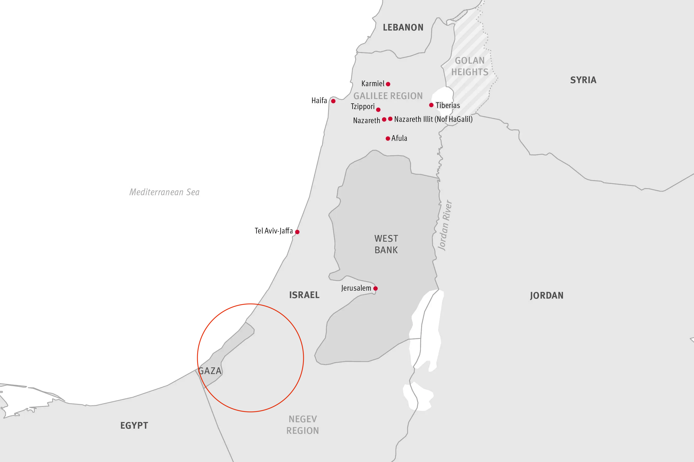
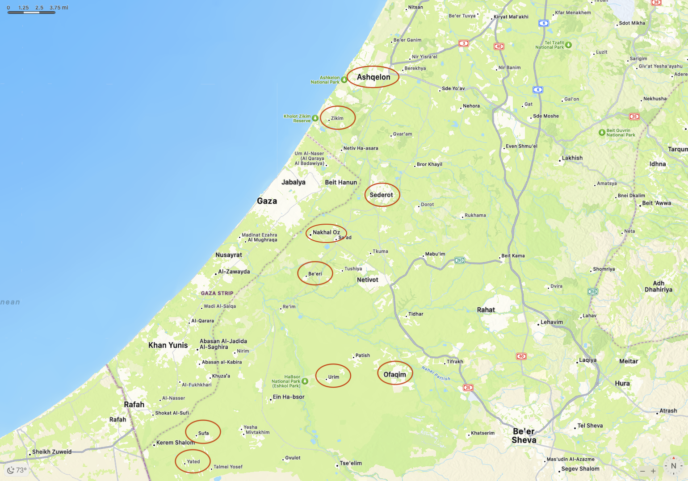
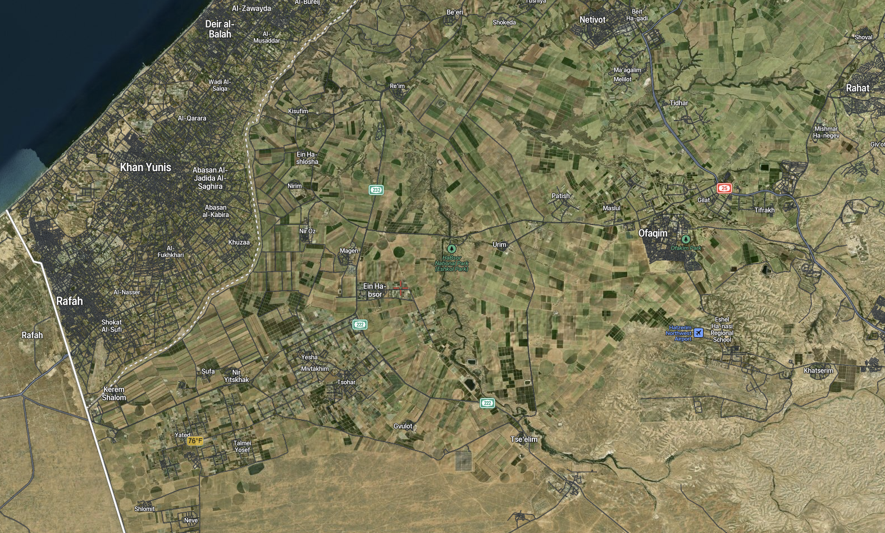

2023-10-16 08:00
 Approximate range of Hamas attacks
For some people, the Hamas attacks came out of nowhere and can only be explained by sinai chinam, the Hebrew term for baseless hatred. This of course ignores the history and the reality of the moment. With American politicians streaming into Israel to express sympathy and solidarity, it has become politically and socially dangerous to point out that the Hamas attack, while violating every standard of human decency and every law of war, was not unprovoked. It is also politically and socially dangerous to note that, unless something changes, Hamas’s savage attack and Israel’s savage response won’t be the end of it. That “something” is Israel’s 75 year occupation of a population almost its own size.
W.H. Auden’s poem, September 1, 1939, is a deeply dark and political poem about the rise of Nazism culminating in the invasion of Poland on September 1st, 1939. In it we find these lines: “I and the public know / What all schoolchildren learn, / Those to whom evil is done / Do evil in return.” As today, Auden’s expressions of simultaneous revulsion at Nazism and disgust for the reparations and humiliations Germany was subject to, and which fed Nazism, were not appreciated by a flag-waving public averse to nuance.
Managing the occupation of a population almost its own size has left Israel with basically three options: (1) to grant citizenship to Palestinians and create a democratic secular state; (2) clear out of the illegal settlements to permit a Palestinian state to exist; or (3) kill as many Palestinians as possible and force them to flee elsewhere. Israel has always chosen the third option and, appallingly, most Western nations with histories of colonialism and ethnic cleansing themselves have been complicit enablers — the United States especially.
 Some of the 20 sites attacked
Americans may not like to face facts, but for years many Israelis, including those in Israel’s security establishment, have warned that Israel has become an apartheid state. In September, Tamir Pardo, the former head of Mossad, used exactly those words: that Israel was forcing an apartheid system on Palestinians in the West Bank. The month before, Israel’s Security Minister Itamar Ben Gvir acknowledged exactly how the system works: “My right, the right of my wife and my children to move around Judea and Samaria” — the biblical names for the West Bank — “is more important than freedom of movement for the Arabs.” And this was the West Bank he was talking about, not the strip of squalid, densely-populated refugee camps in Gaza to which residents of hundreds of Arab villages in the Negev were forced to flee and which is now the largest open-air prison on the planet.
Last week’s attack on Israel was stunning and ambitious. Amid a barrage of rockets which temporarily overwhelmed the Iron Dome defense, Hamas commandos also used low-tech ordnance, drones, and paragliders to overwhelm Israel’s border surveillance systems, then systematically attacked over 20 kibbutzim. All were within striking distance of Gaza, and the targets in most cases were kibbutzim and moshavim of military importance or which had been built on “cleansed” Arab villages. There is no question that Hamas used terror, but it was not merely a symbolic act like felling the Twin Towers or crashing into the Pentagon. Hamas was conducting a military operation to test Israeli defenses, new tactics, and its own reach. For next time.
Nahal Oz, which was one of the 20 attacked, is half a mile from the town of Sakarya in Gaza. After the 1967 war it became an access point for the Gaza Strip. Because of its proximity to Gaza, it has been under steady attack since its founding in 1951 as Israel’s first Nahal (paramilitary/vocational) settlement.
 Density of Israel’s agricultural settlements and Gaza’s refugee camps
In April 1956, Nahal Oz’s security officer Ro’i Rothberg was killed and his funeral was attended by none other than Moshe Dayan, whose eulogy acknowledged Gazans’ anger at being ethnically cleansed from their own land, the burden that Nahal border settlements bore to serve as security buffers for the rest of Israel, and – freely expressed – that Israel’s settlement can only proceed by ignoring the pain and anger of those it has consigned to the life of refugees. It is an astoundingly warped and profoundly un-Jewish perspective on human suffering:
Early yesterday morning Roi was murdered. The quiet of the spring morning dazzled him and he did not see those waiting in ambush for him, at the edge of the furrow. Let us not cast the blame on the murderers today. Why should we declare their burning hatred for us? For eight years they have been sitting in the refugee camps in Gaza, and before their eyes we have been transforming the lands and the villages, where they and their fathers dwelt, into our estate. It is not among the Arabs in Gaza, but in our own midst that we must seek Roi’s blood. How did we shut our eyes and refuse to look squarely at our fate, and see, in all its brutality, the destiny of our generation? Have we forgotten that this group of young people dwelling at Nahal Oz is bearing the heavy gates of Gaza on its shoulders? […] We will make our reckoning with ourselves today; we are a generation that settles the land and without the steel helmet and the cannon’s maw, we will not be able to plant a tree and build a home. Let us not be deterred from seeing the loathing that is inflaming and filling the lives of the hundreds of thousands of Arabs who live around us. Let us not avert our eyes lest our arms weaken.
Ashkelon, which was bombarded by missiles during the attack, was once the Palestinian town of al-Majdal with 10,000 residents, mainly Muslim and Christian. It was ethnically cleansed in 1948.
Be’eri, one of this hardest-hit by Hamas, is roughly 2 miles from Gaza and, as the crow flies, perhaps 5 miles from Gaza City. It is one of 11 settlements in the Negev established by the Jewish Agency in 1946 to block the Morrison-Grady Plan, a partition plan which would have assigned the Negev to a Palestinian state. The rave at which over 260 young people were slaughtered is just outside Be’eri, where over 107 were also butchered at the Be’eri kibbutz. Most of Be’eri’s members belong to Israel’s secular left. Vivian Silver, who was on the board of B’Tselem, an Israeli human rights organization reviled by the Netanyahu government, was one of those abducted by Hamas.
Kfar Aza was another scene of brutal butchery of civilians by Hamas. Established in 1951 by Maghrebi Jews from Egypt and Morocco, Kfar Aza lies 3 miles east of Gaza.
Kissufim, whose residents were murdered and abducted, is another Nahal settlement founded in 1951 by the Zionist Youth Movement and is quite close to the former Gush Katif settlement in Gaza, one of 21 settlements evacuated by Arial Sharon in 2005. There is also a crossing to Gaza two miles to the West.
Magen is 2.5 miles from the Gaza border and was also overrun in the Hamas attack.
Nirim is another 11-point settlement founded in 1946 by Hashomer Hatzair volunteers to thwart the Morrison-Grady partition plan. An important battle took place in Nirim in 1948 but Israel was able to hold the town.
Ofakim was founded in 1955 by Moroccan and Tunisian Jews, displacing Bedouins in an area called Khirbat Futals. The original residents fled to Al-Muharraqa, from which they were then expelled to the Gaza Strip. Many of the hostages from the October raid by Hamas were from Ofakim.
Sderot s only a half mile from Gaza and was built on the site of the Palestinian village of Najd, whose 13,576 residents were ethnically cleansed the day before the British Mandate ended and Israeli independence was declared. Villages like Sderot were intended to serve as buffers to prevent “re-infiltration” by Palestinians to Israel. For years towns like Sderot in the Negev were where Israel’s Ashkenim settled new arrivals from the Maghreb, then Ethiopia and Russia.
The Eshkol district which includes most of these communities includes Yesha, where Trump’s ambassador to Israel, David Friedman, himself a settler, owns a home.
Urim, which was attacked but not penetrated by Hamas, is built over the ruins of the Arab village of Al-Imara, whose original residents were forced to flee to Gaza.
Yad Mordechai kibbutz was founded in 1936 by Polish Hashomer Hatzair on the site of the Palestinian village of Hiribya.
Yated (“anchor”) was founded in 1982 and is among the southern-most settlements near Gaza’s Rafah crossing to Egypt.
Zikim, which was the scene of a naval assault by Hamas, was originally known as Hiribya. In 1945 it had a population of 2500. Its residents fled Jewish militias and most fled to Gaza. In 1949 Hiribya was re-settled by Hashomer Hatzair, a Labor Zionist youth group which formed several kibbutzim in Israel’s South.
* * *
One of the most disturbing videos that surfaced after the attacks was of the attack on young Israelis at a rave barely two miles from Gaza. Disturbing because 260 young people with the rest of their lives before them were massacred just to make a political point. But also disturbing that anyone can imagine the freedom to dance with joyous inhibition barely two miles from so much inflicted human misery.
Those to whom evil is done / Do evil in return.